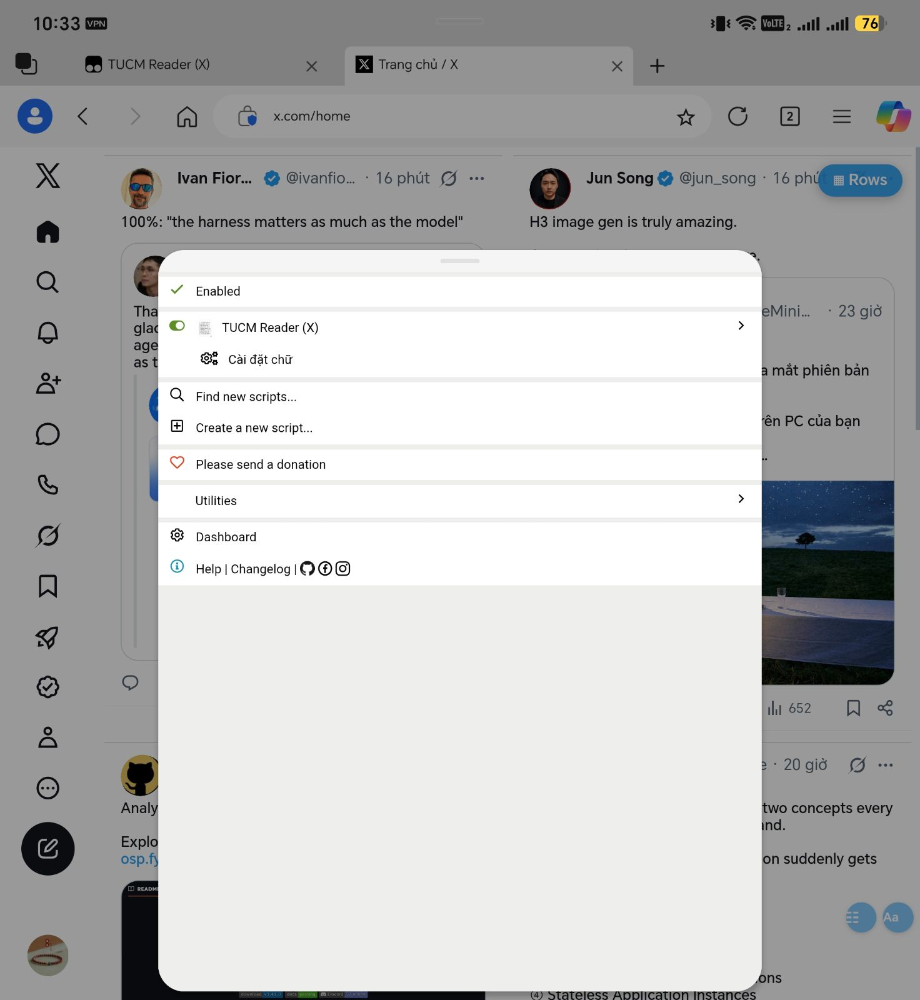
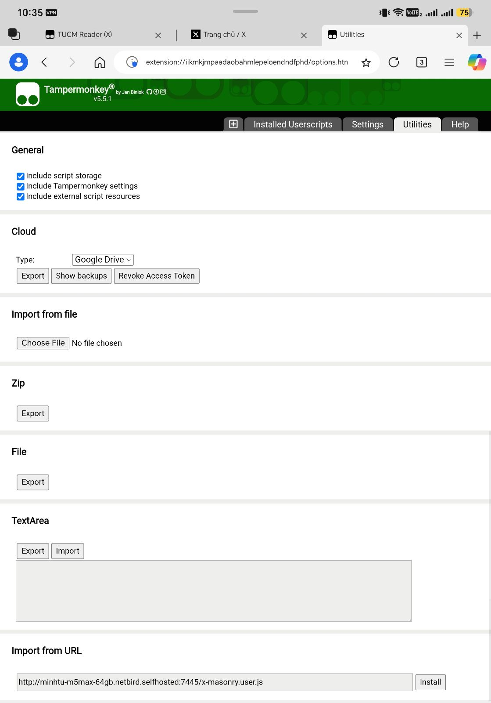

Cài TUCM Reader
Lưới đọc X, chọn số cột, phông chữ, chặn quảng cáo. Máy mới hoàn toàn.
Android (Edge + Tampermonkey)
- Play Store → cài NetBird → đăng nhập → bật kết nối.
- Play Store → cài Microsoft Edge.
- Edge → ☰ → Extensions → cài Tampermonkey.
- Bấm biểu tượng Tampermonkey → Dashboard.

Menu Tampermonkey → Dashboard - Tab Utilities → kéo xuống Import from URL → dán link → bấm Install:
http://minhtu-m5max-64gb.netbird.selfhosted:7445/x-masonry.user.js

Utilities → Import from URL → Install - Ở trang hiện ra, bấm Install (hoặc Update).
- Mở x.com và đăng nhập. Nút Aa (góc dưới phải): phông chữ, cỡ chữ, số cột. Nút ☷: bật/tắt lưới.
Script không chạy? Bật Allow User Scripts (hoặc Developer Mode) cho Tampermonkey — FAQ Q209. Đã có script cũ “X Masonry + Adblock” thì xoá nó.
Máy tính (Chrome)
- Cài NetBird (netbird.io) → đăng nhập → bật kết nối.
- Cài Google Chrome.
- Tải và giải nén vào một thư mục cố định: http://minhtu-m5max-64gb.netbird.selfhosted:7445/tucm-reader-latest.zip
chrome://extensions→ bật Developer mode → Load unpacked → chọn thư mục vừa giải nén.- Mở x.com và đăng nhập. Số cột: bấm biểu tượng extension → X grid columns.
Cùng mạng LAN (không cần NetBird): đổi
minhtu-m5max-64gb.netbird.selfhosted:7445 thành 192.168.8.180:7446.